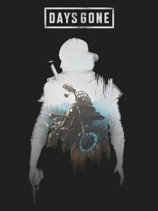

Off Duty
Annoyingly, unapologetically happy, most of the time.
That's the line I use on my own Instagram bio, and it's the closest thing I have to a personal mission statement. The rest of this site is careful and considered, on-brand. This page isn't, it's what I actually spend my evenings on.
Video Games
Where most of my free time actually goes.
Not a ranking, just the ones I'd defend in an argument. Days Gone is the hill I'll die on.

See what I'm actually playing right now on Steam.
From Player To Maker
Eventually, playing wasn't enough.
Being a picky, opinionated player for years eventually made me want to build one myself. So I'm making a voter-education visual novel in my spare time, badly at first, AI-assisted now, but the same instinct behind everything else I do: research first, then make it land.
Music
Whatever gets a deadline done.
This changes with the project and my mood, and I will judge you slightly if you skip to the chorus.
Currently
What's got my attention right now.
I'll be honest about how often this actually gets updated.
Reading
Add the book you're currently reading
Watching
Add a show or film you'd recommend
On The Move
Running keeps my head straight.
It's the one part of the day nobody can put on my calendar. Add a stat or two below, distance this year, a personal best, a favorite route.
In Pictures
Proof I own a camera roll.
I don't shoot much yet, on purpose, this section stays empty until that changes. Swap these tiles for real photos in /assets/off-duty/candid/when it does.